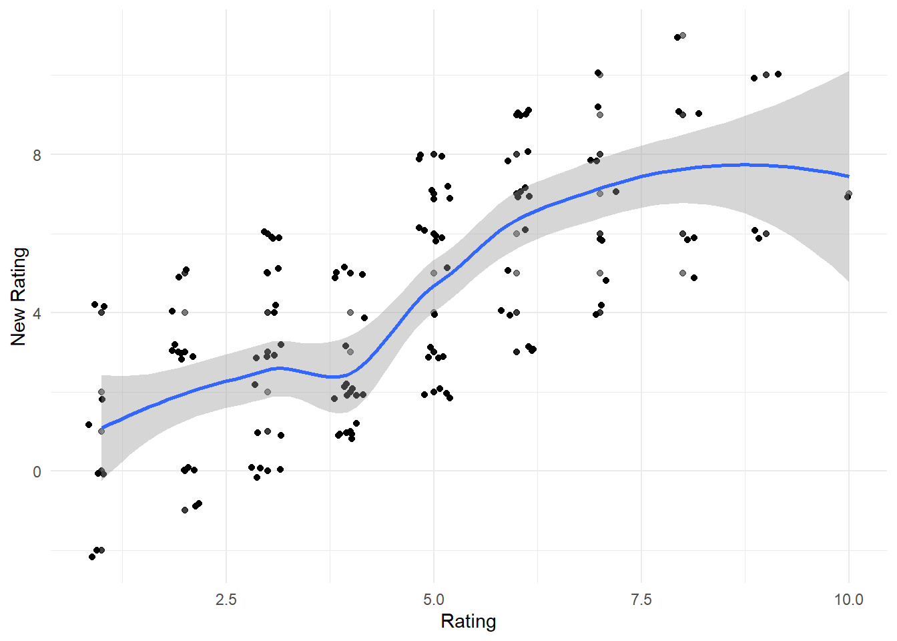
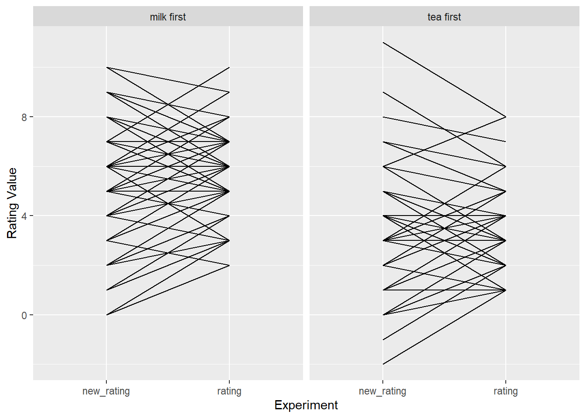

Simulate data for two experiments and compute test-retest reliability
Practice some tidyverse (pivot_longer, mutate, select, and add onto existing base ggplot skills (geom_point, geom_jitter, facet_wrap, geom_line)
Run a basic correlation (cor.test and interpret differences in observed reliability based on differences in the simulated data)
Import the libraries we need
library(tidyverse)
── Attaching core tidyverse packages ──────────────────────── tidyverse 2.0.0 ──
✔ dplyr 1.1.4 ✔ readr 2.1.5
✔ forcats 1.0.0 ✔ stringr 1.5.1
✔ ggplot2 3.5.1 ✔ tibble 3.2.1
✔ lubridate 1.9.3 ✔ tidyr 1.3.1
✔ purrr 1.0.2
── Conflicts ────────────────────────────────────────── tidyverse_conflicts() ──
✖ dplyr::filter() masks stats::filter()
✖ dplyr::lag() masks stats::lag()
ℹ Use the conflicted package (<http://conflicted.r-lib.org/>) to force all conflicts to become errors
library(ggplot2) # plotting
Define the simulation function - same as before
This makes “tea data”, a tibble (dataframe) where there are a certain number of people in each condition (default = 48, i.e., n_total, with n_total/2 in each half)
The averages of the two conditions are separated by a known effect (“delta”) with some variance (“sigma”). You can change these around since we’re simulating data!
set.seed(123) # good practice to set a random seed, or else different runs get you different results
make_tea_data <-function(n_total =48,sigma =1.25,delta =1.5) { n_half <- n_total /2tibble(condition =c(rep("milk first", n_half), rep("tea first", n_half)),rating =c(round(rnorm(n_half, mean =3.5+ delta, sd = sigma) ),round(rnorm( n_half, mean =3.5, sd = sigma )))) |>mutate(rating =if_else(rating >10, 10, rating),# truncate if greater than max/min of rating scalerating =if_else(rating <1, 1, rating))}
1. Make a dataframe with our simulated data
Input more participants (60 per condition) with a bigger average difference between conditions (2 points), with variance between participants at 2 points (sigma)
# YOUR CODE HEREthis_tea_data <-make_tea_data(n_total =120, delta =2, sigma =2)
2. Creating the second experiment
Now create a new column in your tibble for the second experiment. You should now have a dataframe with some tea rating (column rating)
We’re gonna pretend that we are doing an additional experiment and collect tea ratings again! And we can simulate this data by pretending that each participant when they rerank the tea might change their rating slightly, by some number between -3 and 3 (so some participants might become more negative, and some participants might become more positive of the tea)
Let’s call this change in rating the difference. you can generate this difference by using sample (sample(-3:3, 1) ) this gives you a random number between -3 and 3. use ?sample to get the documentation for this function to further understand what it’s doing
If your difference is the same for each participant –> that’s not very realistic! It’s unlikely that people will change their rating so uniformly, yeah? so what we want to do is use rowwise() to make sure that R is computing a new difference for each participant
Then let’s create a new_rating column by adding the difference to the old rating column! this is the simulated result from “experiment 2”
Then you might want to clip the rating so that it’s between 1 and 10 again (you can see the code for this from the original simulation function)
TIPS:
Recommend running rowwise() in your pipe before creating the new condition to force tidyverse to sample a new random value for each row
Give your next dataframe a new name so that you’re not rewriting old dataframes with new ones and getting confused
If you’re getting stuck here, you can run through the solutions block to get to the next step
# STARTER CODE# Note: `rowwise()` is used to apply `mutate` to each row individually. # This ensures each participant has a unique `difference` value, simulating realistic individual variation.tea_data_new_exp <- this_tea_data %>%rowwise() %>%mutate(difference =sample(-3:3, 1)) %>%mutate(new_rating = rating + difference)
3. Make a plot and compute the correlation
Examine how the ratings are correlated across these simulations, by making a plot. You’ll need to give your data to ggplot
`geom_smooth()` using method = 'loess' and formula = 'y ~ x'

Hint: 1. Try out geom_point which shows you the exact values
2. Then try out geom_jitter which shows you the same data with some jitter around height / width
Bonus: 3. Use alpha to make your dots transparent 4. Use ylab and xlab to make nice axes labels 5. Use geom_smooth() to look at the trend_line 6. Try making each dot different by condition, if you want.
Now examine – how correlated are your responses? What is your test-retest reliability? Use cor.test to examine this – the first value should be ratings from the first experiment, and the second argument is the ratings from the second experiment. You’ll need the $ operator to grab the column from the tibble (e.g., all_tea_data$rating)
Pearson's product-moment correlation
data: tea_data_new_exp$rating and tea_data_new_exp$new_rating
t = 10.097, df = 118, p-value < 2.2e-16
alternative hypothesis: true correlation is not equal to 0
95 percent confidence interval:
0.5712867 0.7665172
sample estimates:
cor
0.6808139
5. Make another plot – like the one from the chapter, where each line should connect an individual subject
First, use pivot_longer to make the dataframe longer – you’re going to need one column with all ratings, and a new column that says which experiment the ratings are from.
Example before pivot_longer
│ participant_id │ rating │ new_rating │
After pivot_longer (creates a long format with “experiment” as a label)
│ participant_id │ experiment │ rating_value
In your ggplot, use facet_wrap(~condition) to make two plots, one for milk_first and one for tea_first
Use geom_line – with grouping specification by aes(group=sub_id) – to connect individual datapoints between participants for each condition
# YOUR DATA WRANGLING CODE HEREtea_data_long <- tea_data_new_exp %>%pivot_longer(cols =c(rating, new_rating), names_to ="experiment", values_to ="rating_value")tea_data_long <- tea_data_long %>%mutate(ID =rep(1:(n()/2), each =2))ggplot(data = tea_data_long, aes(x = experiment, y = rating_value, group = ID)) +geom_line() +facet_wrap(~condition) +xlab("Experiment") +ylab("Rating Value")

5. OK, now go back and change things and test your intuition about how this works.
How does reliability change if you increase the variance between participants (sigma) in the first experiment simulated data?
The higher the sigma, lower the reliability
How does reliability change if you change how much variation you allow between the first and second experiment (hint: this is the “difference” between the first and the second experiment)?
Higher allowed variation, lower the reliability
How does reliability change if you increase sample size, holding those things constant (e.g., your overall sample size)